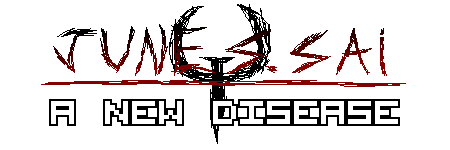

Last Update: September 8, 2022, 22:48 (New!)
See how the site grew as the time went by, from a barely functional website
To an awesome website filled with things that make you laugh and cry!
GameSlime.com was added as a partner in the Partners Section
Dragon Ball Online was added as a downloadable game at the
Games & Fangames section
Sections with multiple categories now show which sections were updated
The text size was shrinked
The Donate Section now has the "Hall Of Fame", displaying everyone that
made any sort of donation, no matter the amount.
The Blog Section was completely revamped, now boasting categories to help
organize topics more easily, and so people can have a better idea on what
they want to read
Buttons and clickable objects now light up whenever you hover the mouse over them
or click them
The About Section was updated
The logo was changed into a slicker, more refined design
The site now has implemented a very basic JavaScript script in order to make
changing the menu easier instead of me having to manually edit everything
one by one.
The dates for all of the Guestbook Messages were finally added
My own comment on the Guestbook was changed aswell
The Donate Section was moved out of the extras and was made into one of the
main sections of the site
The style and visuals for the blog posts were altered
A new blog post "I Won This One" was added
The Guestbook Section also had a lot of it's code rewritten in order to look
and function better
The Donate Section was added to the Extras Section
A new font called "Andes", which was the font used in Sonic 3 for the
zone transition screens was added to be download in the Fonts Section
The Partners Section had it's visuals and navigation updated
A lot of the banners (mostly of the newer sections) have been resized in
order to fit the website better
Petscop Fonts, a pack with six fonts included within it was added to be
downloaded at the Fonts Section
The Games & Fangames section for the download section was also finally
implemented, and with that, a visual overhaul on the downloads section to make
things more presentable and easier to navigate
The Fonts Section for the Downloads Section finally received a visual overhaul
Implementing it was a problem however, since the code I was using wasn't giving me
the results I was looking for, so I resorted into asking it at stackoverflow.com
which ended up giving me exactly what I was looking for, and thus, the Fonts Sec-
tion was finally presentable and good looking
The first section of the Downloads section was finally implemented, the "Fonts" section
The design is very rough at the moment, but I was mostly focused on getting it up and running
so I could then think about working on the design side later
A few older pages on the art section also had their metadata finally implemented, and the same
is planned for the rest of the pages aswell
A new blog post "New House, New June" was added to the Blog Section
The Update History section was finally finished, and with it, some of the history of the
site's development, alongside some commentary and a few trivias with it aswell.
The site finally had proper metadata implemented into it, although some of the older pages
still lack metadata as of me writting this
The extras section was also implemented into the site, even though it's unfinished.
The site finally got it's own domain, and while it's still being hosted through github pages
It could finally have the proper URL it was always meant to have, JuneSSai.net.
The site was born in a very primitive state, although it wouldn't take long for the site
to take shape, I implemented the first few pages and sections pretty much overnight
those being the Home, Blog, Art, Guestbook and About sections since they were the most
important parts of the site in my opinion. The site was (and still is) hosted through
github pages, and I didn't knew you could update things through folders, so I'd make
every change through github itself, means that every little update would require me
to wait until the site updated on my end to make another change, that was it for a good
few days until Octo pointed out to me I could do it all through my desktop and Vim
The first few months of the site were incredibly experimental, but they were also some
of the most fun I've had building it, and the first few iterations of the site helped
to shape what the site is today, so overall, the first few days of the website were pretty
great, even if things were extremely rough.
(Click the image to see it in full size)